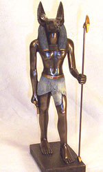

Анубіс, в єгипетській міфології бог і покровитель мертвих, син бога рослинності Осіріса і Нефтіди, сестри Ісіди. Новонародженого Анубіса Нефтида ховала від свого чоловіка Сета в болотах дельти Нілу. Богиня-мати Ісіда знайшла юного бога і виховала його.
Пізніше, коли Сет убив Осіріса, Анубіс, організовуючи поховання померлого бога, загорнув його тіло в тканини, просочені особливим складом, зробивши таким чином першу мумію. Тому Анубіса вважають творцем похоронних обрядів, покровителем некрополів, і називають богом бальзамування. Анубіс допомагав зберегти тіло Осіріса. Анубіс також допомагав судити померлих і супроводжував праведних до трону Осіріса.
Анубіса зображали у вигляді вовка, шакала або дикого собаки Саб чорного кольору (або людини з головою шакала або собаки). Дочкою Анубіса вважалася кебехет, яка скоювала узливання на честь померлих. Найдавніша згадка про Анубіса зустрічається в Текстах пірамід за часів Стародавнього царства в XXIII столітті до нашої ери, де він асоціювався виключно з царськими похованнями.
Подібно до інших богів давнини, Анубіс виконував різні ролі. Тварини, у вигляді яких зображувався Анубіс - мешканці пустелі, тобто земель, прикордонних з країною мертвих Дуату. Анубіс міцно пов'язаний з чорним кольором - кольором смерті, загробного світу і ночі. У Книзі мертвих Анубіс зазвичай зображується в сцені зважування серця покійного.
З піднесенням шанування Осіріса Анубіс перейшов на другорядні позиції, часто асоціювався з Упуат, іншим богом в образі вовка.
В епоху еллінізму Анубіс був об'єднаний греками з Гермесом в синкретичної образі германубіс. Цей бог як чарівник згадується в римській літературі. У герметичних текстах також зберігалися згадки про нього аж до епохи Відродження. Деякі вчені бачать риси Анубіса у святого Христофора та в середньовічних розповідях про Кіноскефалах (людей з собачими головами). Центр культу Анубіса - місто 17-го нома Каса (грец. Кінополі - «собачий місто»).